地理位置与环境
北碧皇家大学坐落于泰国北碧府。北碧府位于曼谷西北约 128 公里，是泰国面积较大的府之一，山地、森林、河流、瀑布与国家公园共同构成鲜明的自然环境。
这里也因二战时期“死亡铁路”等历史遗迹而成为重要旅游地区，兼具自然资源、历史记忆与区域发展潜力。
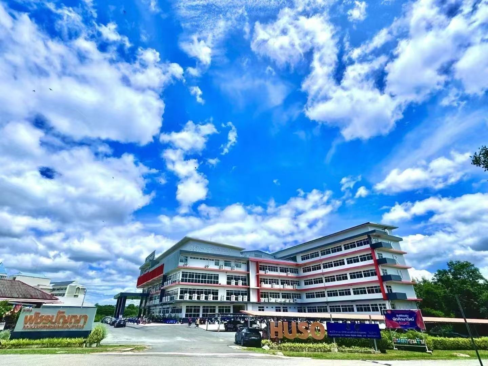
01 · 学校概况
北碧皇家大学坐落于泰国北碧府。北碧府位于曼谷西北约 128 公里，是泰国面积较大的府之一，山地、森林、河流、瀑布与国家公园共同构成鲜明的自然环境。
这里也因二战时期“死亡铁路”等历史遗迹而成为重要旅游地区，兼具自然资源、历史记忆与区域发展潜力。
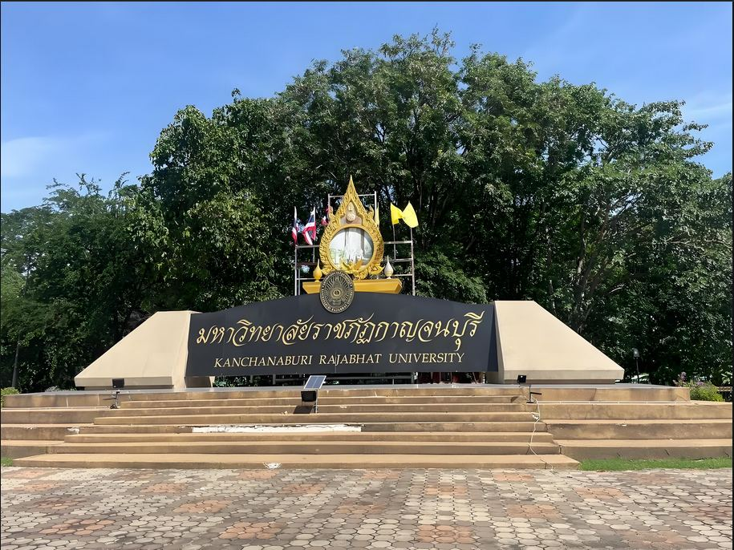
学校为泰国北碧府国立高等院校，设有师范学院、人文与社会学院、科学与技术学院、工业技术学院、管理学院等五个学院。
目前覆盖 40 多个本科专业，并设有硕士与博士培养方向，形成从本科到研究生教育的完整路径。
02 · 学校专业设置
包括计算机科学、经济学、体育运动学、食品科学、财务管理、信息管理、旅游、法律、音乐新闻管理、旅游英语、英语、数学、学前教育、新闻传播学、社会学等。
计算机科学、经济学、教育学、体育运动学、食品科学、财务管理、法律学、理工学等 20 多个方向可形成本硕培养路径。
设有教育管理、课程与学习管理、会计学、工商管理、体育教育、计算机科学等硕士专业，兼顾学术研究与实践应用。
提供教育管理、教育课程与教学论、体育教育、计算机科学等博士方向，鼓励学生开展前沿学术研究，并与国内外科研机构合作。
03 · 招生计划与费用
招生对象
住宿费约 600-1500 元人民币/人/月；餐费约 10-20 元人民币/餐。实际费用以泰铢与当期汇率为准。
04 · 校园生活与国际交流
图书馆藏书丰富，实验室设备完善，为不同专业学生提供学习资源与实践条件。
学生宿舍、食堂、超市等生活配套便利，支持学生在校内形成稳定的学习生活节奏。
学生社团涵盖学术、文艺、体育等领域，定期活动帮助学生锻炼组织能力与团队协作能力。
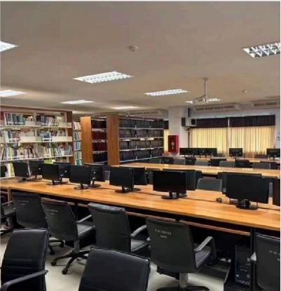
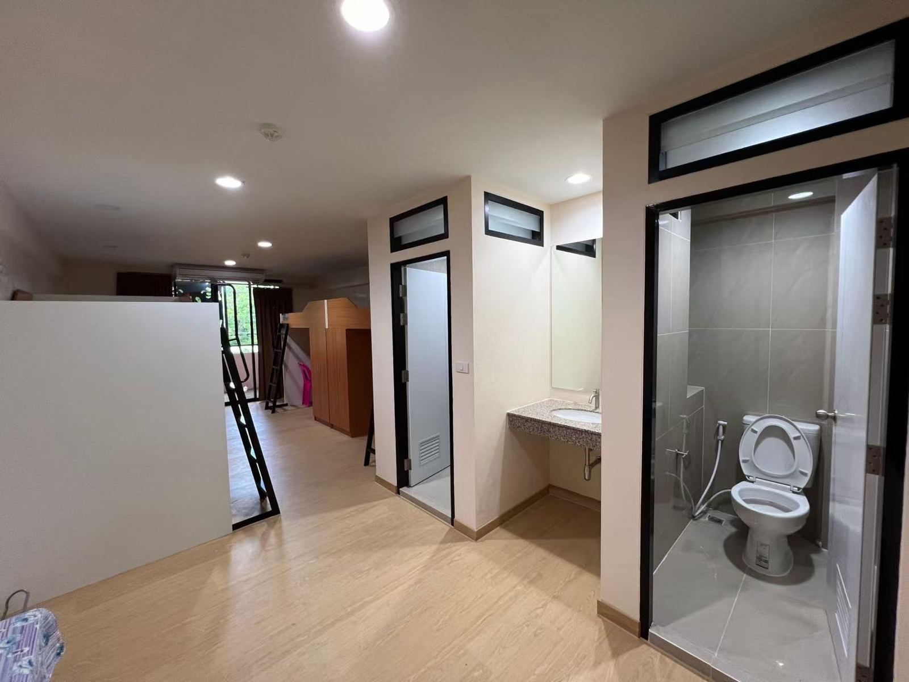
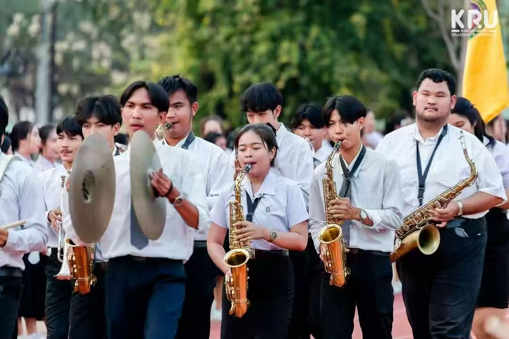
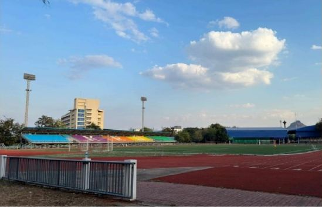
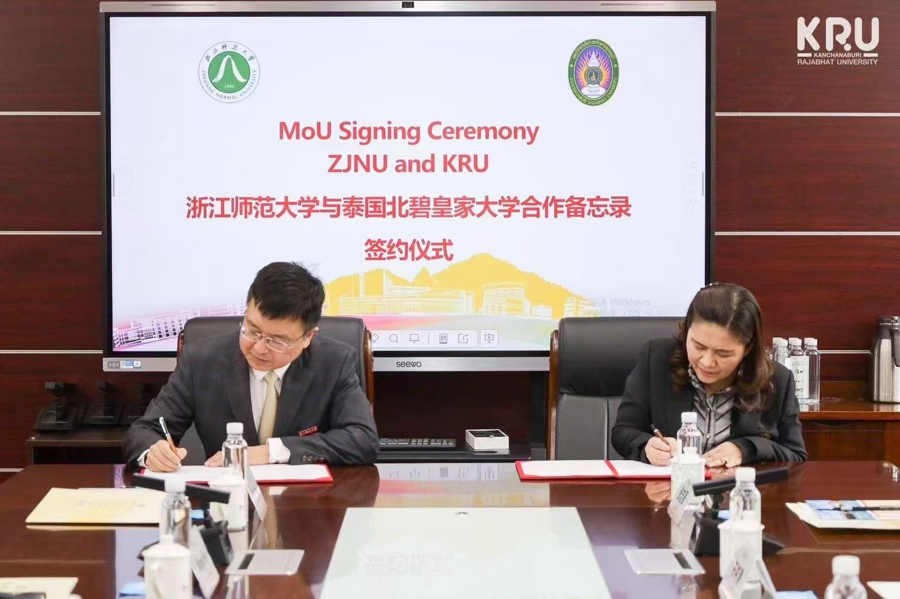
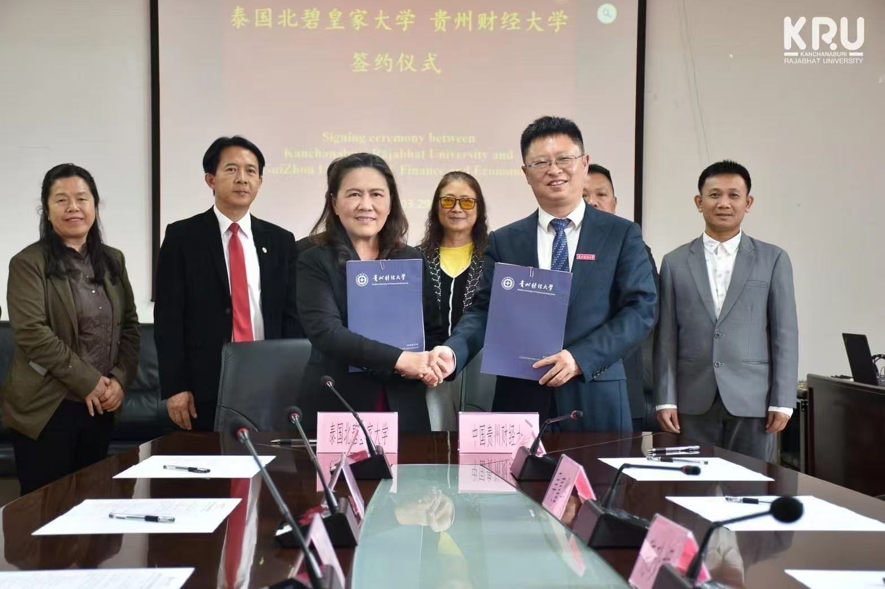
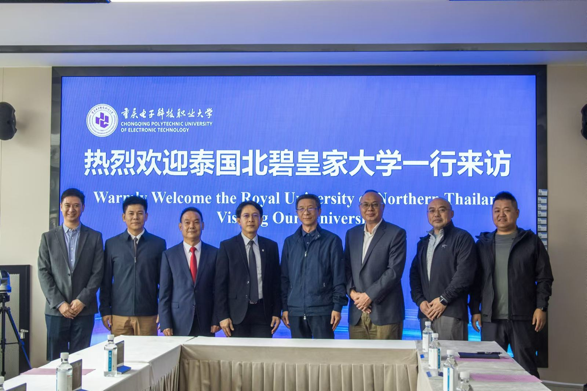
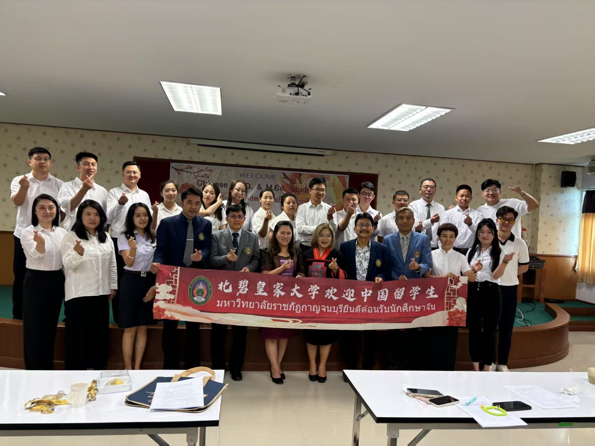
学校积极组织国际交流活动，合作院校与交流案例包括百色学院、浙江师范大学、贵州财经大学、辽宁科技大学、四川外国语大学、重庆电子科技职业大学、淮北师范大学等。
05 · 毕业与就业
学生需修满规定学分，成绩合格，方可毕业。
硕士和博士学生需完成学位论文并通过答辩。
部分专业学生需完成实习和实践任务，积累实际工作经验。
毕业材料
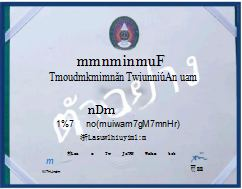
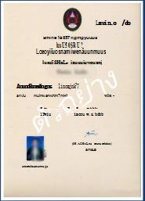
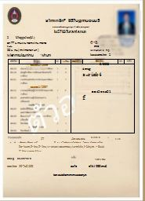
中泰合作项目、基础设施建设与中资企业在泰发展，为具备中泰文化理解、语言能力与跨文化沟通能力的毕业生创造岗位机会。
毕业生可进入中资企业、泰资企业或跨国公司，从事国际贸易、跨境电商、金融、旅游等领域工作，也可结合泰国创业支持政策探索自主创业。
北碧皇家大学 · 2026